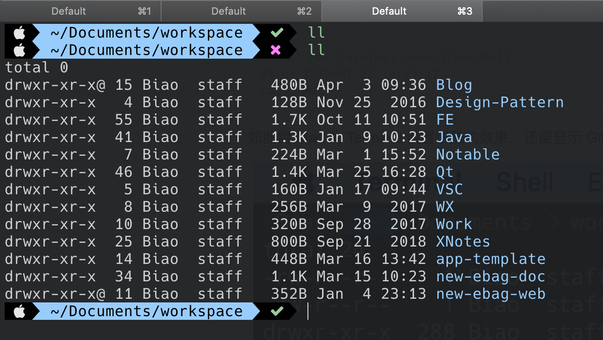

Mac 的终端打造主要综合使用 iTerm + Shuttle + Expect 这三个软件:
- iTerm: 替代系统自带的 Terminal
- Shuttle: 为快捷命令菜单，点击后在 iTerm 中执行相应的命令，可用于管理常用命令和管理 SSH 主机
- Expect: masOS 自带了 Expect，可实现 SSH 自动登录
iTerm
iTerm 可匹配内容进行高亮显示、按下快捷键后窗口从屏幕上方滚动下来，请参考 iTerm 设置。
如下图设置配置 iTerm 的主题，请参考 Mac Terminal Powerlevel。

Shuttle
iTerm 的 Profile 可以管理 SSH 主机，但是不够方便，可以使用 Shuttle 来分目录管理，并且 Shuttle 还可以用来管理一些常用命令，点击后就在 iTerm 里打开新标签页进行执行。
请参考 Shuttle 使用。
带多级目录的配置参考:
1
2
3
4
5
6
7
8
9
10
11
12
13
14
15
16
17
18
19
20
21
22
23
24
25
26
27
28
29
30
31
32
33
34
35
36
37
38
39
40
41
42
43
44
45
46
47
| {
"_comments": [
"Valid terminals include: 'Terminal.app' or 'iTerm'",
"In the editor value change 'default' to 'nano', 'vi', or another terminal based editor.",
"Hosts will also be read from your ~/.ssh/config or /etc/ssh_config file, if available",
"For more information on how to configure, please see http://fitztrev.github.io/shuttle/"
],
"editor": "default",
"launch_at_login": false,
"terminal": "iTerm",
"iTerm_version": "nightly",
"default_theme": "Default",
"open_in": "tab",
"show_ssh_config_hosts": false,
"ssh_config_ignore_hosts": [],
"ssh_config_ignore_keywords": [],
"hosts": [
{
"Newdt SSH": [
{
"name": "K8S-1.73",
"cmd": "ssh root@192.168.1.73"
},
{
"name": "CloudQuery",
"cmd": "ssh root@192.168.12.130"
}
],
"Private": [
{
"name": "VPN Server",
"cmd": "ssh root@101.43.189.11"
},
{
"name": "JianZhong",
"cmd": "ssh root@118.195.181.11"
}
],
"快捷命令": [
{
"name": "项目管理",
"cmd": "open /Users/biao/Documents/公司文档/项目管理"
}
]
}
]
}
|
Expect
当我们使用 Shuttle 把 SSH 主机管理起来后，点击进行 ssh 登录时，还需要手动输入密码才行。借助 Expect 可以实现 SSH 自动登录，可参考 SSH 自动登录。
把下面的脚本保存为 /usr/local/bin/ssh.exp 并为其加上可执行权限 chmod +x /usr/local/bin/ssh.exp，这个脚本接收 3 个参数: 用户名、远程主机 IP、密码。
1
2
3
4
5
6
7
8
9
10
11
12
13
14
15
16
17
18
19
20
21
22
| #!/usr/bin/expect
# 第三个参数为端口，缺省为 22
# ssh.exp root@192.168.10.173 password
# ssh.exp root@192.168.10.173 password 22
set port 22
set user_host [lindex $argv 0]
set password [lindex $argv 1]
if { $argc == 3 } {
set port [lindex $argv 2]
}
set timeout 30
spawn ssh -p $port $user_host
expect {
"(yes/no)?" { send "yes\n"; exp_continue }
"password:" { send "$password\n" }
}
interact
|
然后修改 Shuttle 中 SSH 主机登录的命令为:
1
2
3
4
5
6
7
8
| {
"name": "VPN Server-1",
"cmd": "ssh.exp root@101.43.189.11 Passw0rd"
},
{
"name": "VPN Server-2",
"cmd": "ssh.exp root@101.43.189.12 'P@ssw0rd'"
},
|
点击执行 ssh 命令时不再需要我们手动输入密码了，Expect 会帮助我们自动输入密码。
提示: 如果密码中有特殊字符，需要把密码用引号引起来。